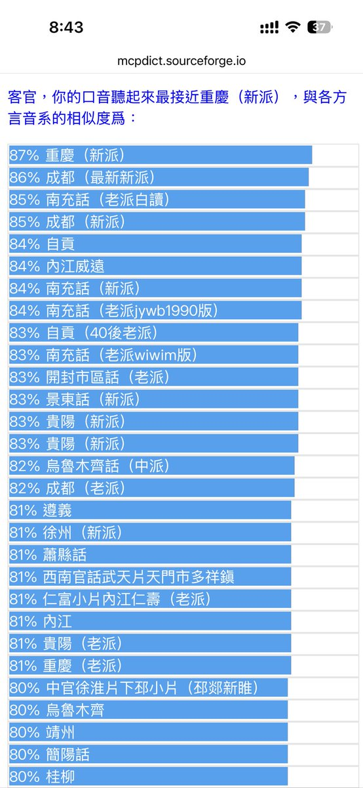

Minokakay
@Minokakay
@aliii67285114 大概是准的

長明（外烟代/我是男高！）ᠴᠠᠩ ᠮᠢᠩ/ꡑꡃꡚꡏꡞꡃ🔜唸書
@aliii67285114
其實很準 我是晉語張呼片張家口市下花園區 與涿鹿很近 我們管涿鹿縣叫 zueq5 leq5 hsiae52
但是我受普通話或者呼和浩特話次之 導致我說得四不像 畢竟我初中也就是兩三年前才學會下花園話 而且我的母語下花園話的聽感確實與豫魯很相近 但是我們又帶著晉語的味道 https://t.co/ZrjM6CHbyg https://t.co/nU2GFoWPPm